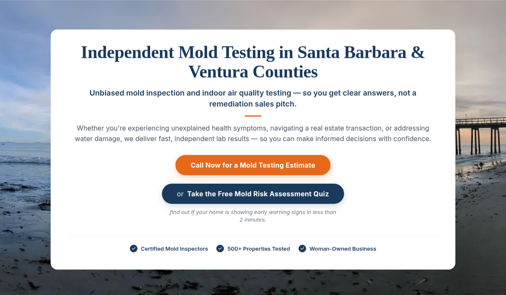
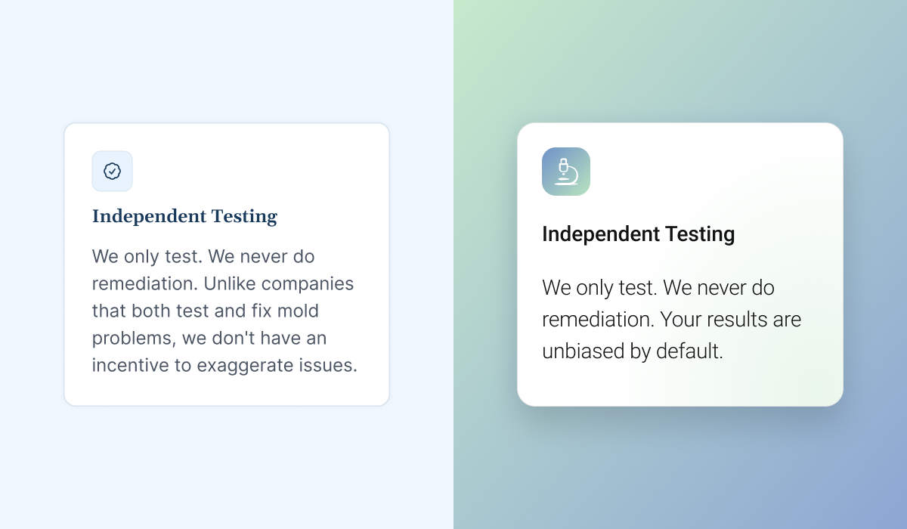
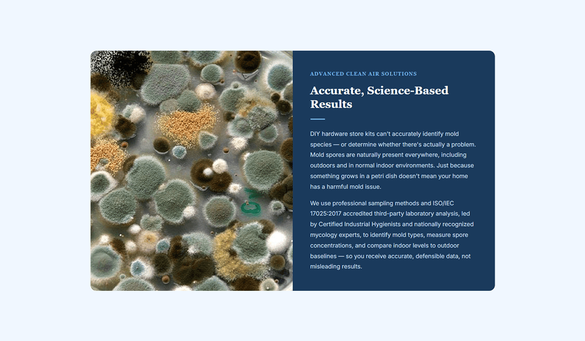
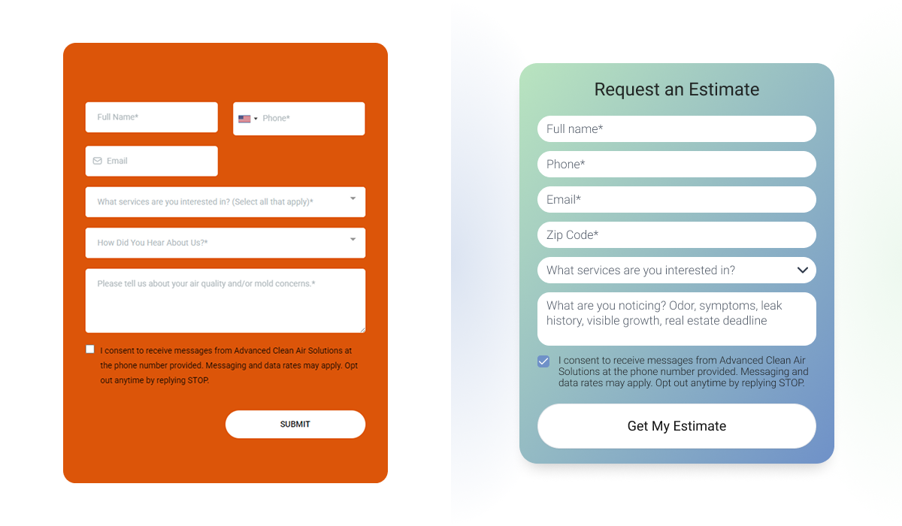
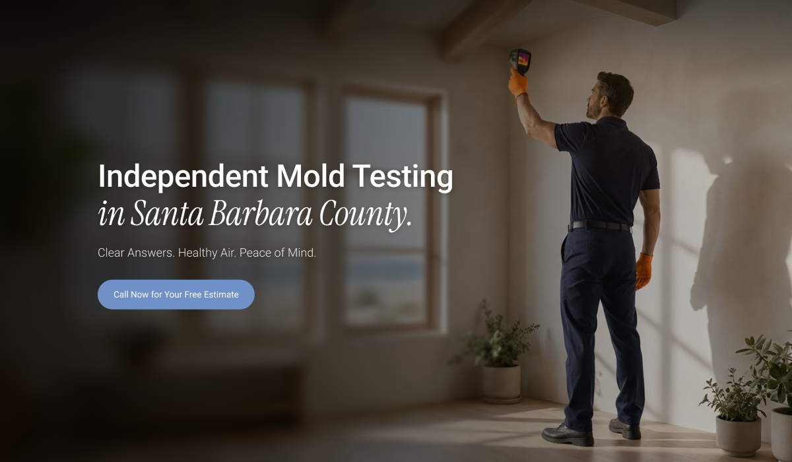
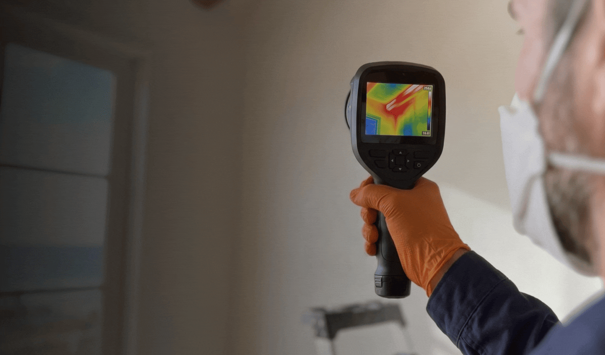
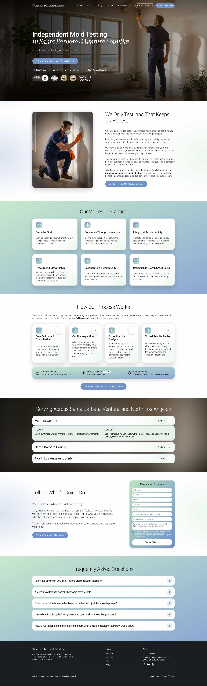

The Cost of a Confusing First Impression
Advanced Clean Air Solutions provides critical indoor air quality testing for a very specific demographic: luxury residence homeowners across the Santa Barbara, Ventura, and North LA areas. When dealing with high-end real estate and the health of their families, these clients expect absolute professionalism, clarity, and trust from the very first interaction.
However, the company was facing a critical business challenge: they simply weren't getting enough qualified leads due to a severe disconnect between their high-value real-world service and their digital first impression.

Upon analyzing their existing digital presence, the root of the problem became immediately clear. The website was failing to communicate the reality of their work. A prospective luxury homeowner landing on the site was met with a generic outdoor photograph and a rigid navy-and-orange color scheme.
The hero section—the most valuable digital real estate on the site—didn't scream "we are indoor air quality experts." It forced the user to read dense text blocks just to figure out what the company actually did, causing immediate friction and high bounce rates.
The Insight: My immediate instinct as the lead designer was that a surface-level UI tweak wouldn't be enough. The entire visual identity of the brand was actively working against them. The aesthetic felt outdated and corporate, making it incredibly difficult for their specific target audience to resonate with the offering.
To save their lead generation, we needed a complete overhaul. We had to visually demonstrate exactly what they do, the moment the page loads, while elevating the brand identity to match the luxury homes they service.
Designing for Calm and Clarity
Finding the Right Aesthetic
The visual transformation didn't happen overnight. We ran multiple design tests to find the perfect visual language for a high-end demographic. We initially experimented with keeping the old site's palette, and then explored a more vibrant variety of blues against a stark white background. Finally, the winning concept emerged: a soothing, premium-looking, and reassuring gradient design. This specific aesthetic was chosen because it directly evokes the feelings of "calm" and "health"—the exact emotional response a homeowner wants when hiring an indoor air quality expert.

Restructuring the Information Architecture
When it came to the layout, the decision was obvious: the dense, intimidating blocks of text had to go. To fix this, I created a new underlying template where elements were arranged logically, breaking the information down into bite-sized, scannable chunks. Because this structural shift was so significant, we couldn't just move old text into new boxes. The entire content was rewritten from the ground up, starting with the Homepage, to match this new, streamlined architecture.

The "Lightbulb Moment": Visual Rhythm and Removing Friction
A major breakthrough in the design process came when I established a working background contrast strategy to guide the user's eye. To keep users engaged, I created a specific visual rhythm: starting with the strong, context-rich Hero image, transitioning into clean, white-predominant sections for optimal readability, and then strategically breaking the pattern with gradient or blurred backgrounds. This made the scrolling experience dynamic and interesting rather than monotonous.
Finally, we tackled the conversion engine: the contact form. The original setup was overly complicated and visually demanding. After a few rounds of back-and-forth with the clients, I ruthlessly simplified it. We stripped away unnecessary fields and shifted from a clunky two-column layout to a frictionless, single-column design, making it as effortless as possible for luxury homeowners to request a consultation.

A Digital Presence that Matches the Reality
The Client Reaction
Presenting the final design was incredibly rewarding. The client loved it all the way through, noting that the new interface was exactly what they had envisioned but couldn't quite put into words. We successfully translated their abstract desire for a better website into a tangible, premium digital experience.


The Business Impact: Trust and Positioning
The most significant outcome of this redesign is the dramatic shift in brand positioning. By entirely revamping the visual system and information architecture, Advanced Clean Air Solutions gained immediate brand trust. Their digital presence is finally aligned with the high-end, vital service they provide to luxury homeowners, ensuring that when a potential client lands on their page, they feel they are in expert hands.
Core UX Value Delivered
"By aligning the visual identity with their premium offering and streamlining the information architecture, I delivered a frictionless, reassuring user experience designed to convert high-end homeowners."
